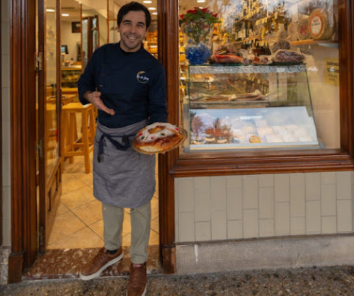
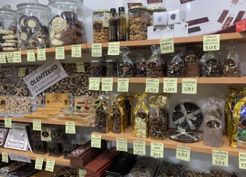
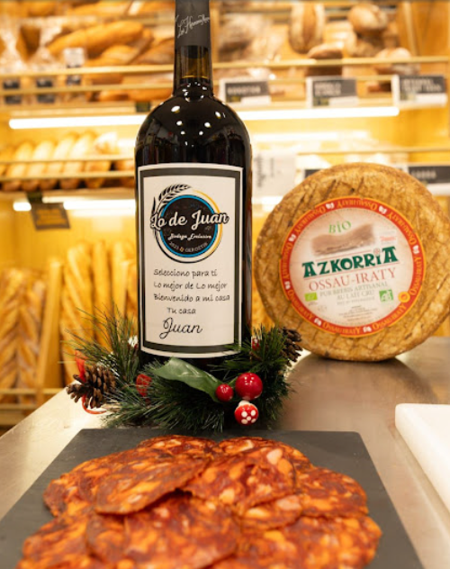
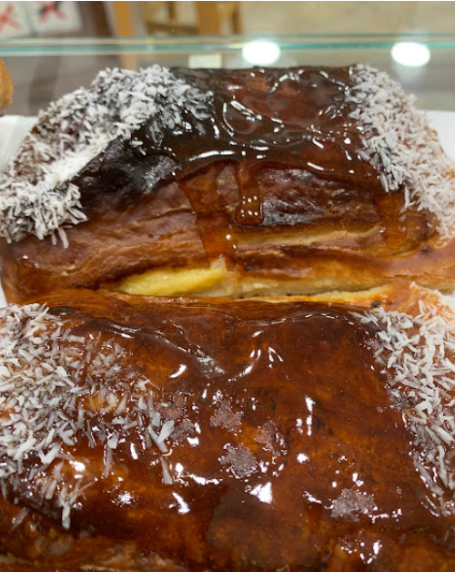
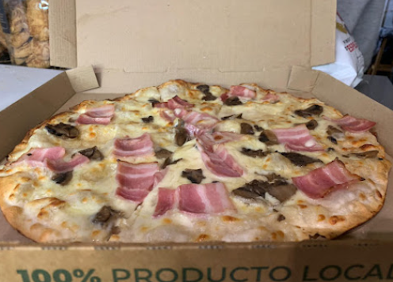

En Lo de Juan encontrarás embutidos artesanos, quesos seleccionados, vinos con nombre propio, pan recién horneado y pizzas elaboradas con producto local. Todo elegido con criterio y con el cariño que merece la buena mesa.
Estamos en el barrio de Borroto, en Donostia, para que siempre tengas cerca lo mejor.




Abiertos de lunes a domingo. Los sábados y domingos solo por la mañana.
843 64 05 75